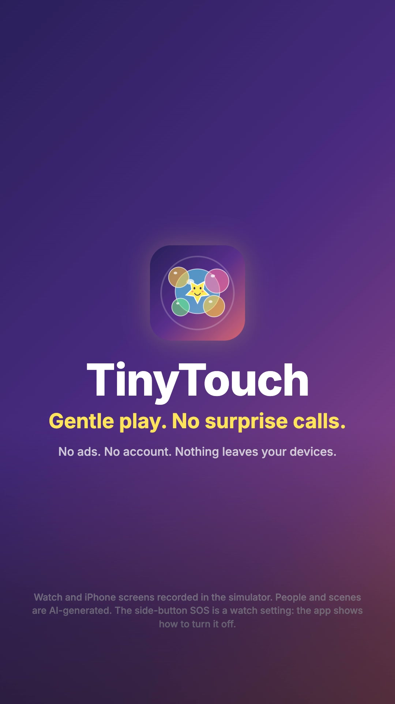

TinyTouch's promo is cut: a 30-second home comedy, plus 15-second cuts in 16:9 and 9:16, from your six Flow shots and music, eight recordings of the real Watch and iPhone apps, and a Kokoro narration as Leo. Pip mashes Leo's watch and calls someone ("Hiii!"); Leo, deadpan: "She's called my boss. Twice." Then TinyTouch: bubbles, the puppy, stardust swipes from every edge, the iPhone switching the game and starting the lullaby, the three-second hold, and Pip asleep: "Zero calls." The YouTube kit for all three cuts is in §9.
Story + scriptsAs planned; every line landed (§2)
CharactersLeo and Pip, made in Flow
Flow shotsAll 6 in and used
Recordings7 used, real taps by UI test (§6)
Voiceoveram_echo + Leo's and Pip's Flow lines (§7)
Music30 s take 2, 15 s take 1, by measurement (§1)
EditRendered: your review with sound (§1)
YouTubeKit ready for all three cuts (§9)
Next for you: watch the three cuts in §1 with sound and check the calls I made without you (music takes, the narration voice, two shots I cropped). Write what to change in Your notes and click Copy summary, or just tell me. When a cut is right, upload it with §9 and send me the 30 s link: it goes on the TinyTouch site and docs page.
The edit: three cuts to review
Built in Remotion (branding/promo-videos/src/tinytouch-launch) from your six Flow shots, two of your music takes, seven recordings of the real apps and the am_echo narration. The jokes are in Leo's and Pip's own Flow voices; the narration, as Leo, says what TinyTouch does.
30 s: take 2. 15 s: take 1. Both are full 1–2 minute songs, not 30/15 s stings, so I picked by measuring them (librosa beat tracking and loudness every 0.5 s). Those two run at 104.1 BPM, the prompt's tempo, with a quiet opening that breaks into a groove; take 1 of the 30 s is at another tempo. Each cut opens on the quiet part, the groove comes in as Leo hands Pip the watch, then the edit jumps on a beat to the track's own ending: for the 30 s, the stop and final hit land on the end card; for the 15 s, the quiet outro plays under the tagline. I couldn't listen to the splices.
Say "other take", or where it sounds wrong.
Narration voice
am_echo: Leo's Flow voice is low (median pitch 64–98 Hz) and am_echo is the lowest Kokoro voice (107 Hz), so the narration and his lines sound closest to one man. The other voices are in §7.
Name another voice.
Shot 2 ("Hiii!")
Flow burned the word "Hiii!" into the picture from 4.25 s, low in the middle. The shot runs 1.2× zoomed, anchored at the top, so it's out of frame. Flow also turned the watch into a little handset she holds to her ear; it still reads as the joke.
Regenerate shot 2 without on-screen text if the zoom bothers you.
Shot 6 ("Zero calls.")
Its first 2.3 s show a pink watch with a lit, half-readable screen. The cut uses it from 2.85 s, zoomed a little, so only a faint glow remains.
—
Shot 5
Flow added a line ("You like that, don't you? Yeah. It is pretty cool."). It's muted: the narration plays over it.
—
The Digital Crown
Recorded, but on the simulator turning it didn't visibly inflate a bubble, so it isn't in the cut. "Swipes and the crown are part of the game" plays over the swipes.
I can record it on your watch if you want the crown shown.
Pace
Cuts sit on the music's beat grid (0.5763 s). The Watch part (0:08–0:24) goes shot 4 → bubbles → the puppy → stardust swipes → shot 5 → the iPhone remote (tap on Sound Garden) → the watch switching, then the moon → the 3-second hold opening the parent menu.
Transitions
A shot into its recording: a cross-zoom. Between beats: a blurred slide. Screens of one watch: a quick fade. Into the end card: a dreamy zoom.
Captions
Every spoken word, word by word, timed from a speech-recognition pass with the script's words. The end card carries the tagline instead of a caption.
Sound
Music ducks under every line; Flow's own sound only plays for the written lines. Loudness after a two-pass normalise: −14.5 LUFS (30 s) and −14.3 LUFS (both 15 s), peaks −1.3 dBTP.
On screen
"Simulator recording" on every recording; the watch simulator's clock is blurred out. End card: "No ads. No account. Nothing leaves your devices." and the small print: screens from the simulator, AI-generated people, and the side-button SOS note.
9:16
Flow shots cropped to the middle, shot 2 and shot 4 framed on Pip; the watch smaller to fit; captions higher.
What I checked: a frame every second of each cut, close-ups of the transitions, the phone and the end card; every cut transcribed back by speech recognition (all lines, in order, nothing from Flow's ad-libs; "Hiii!" checked by loudness since recognition skips it); lengths and loudness. What I couldn't: listen. Please watch with sound: the music splices, the mix of Flow's voices with the narration, how loud "Hiii!" is.
The renders are reproducible (npx remotion render tinytouch-launch-30 --concurrency=2 etc. in branding/promo-videos, then the loudness pass) and make this report 28 MB, so media/edit/ stays out of git.
The story: a toddler with a direct line to Dad's boss
Every parent who wears a watch knows this one: you pick up a toddler, the toddler finds the glowing thing on your wrist, and seconds later you're in a call you didn't make, a playlist is blasting, or the screen is somewhere you've never seen. The joke is Leo's calm despair; the turn is that TinyTouch makes the watch hers to play with, safely. The claims stay to what the app does (projects/tinytouch/docs/index.md): full-screen touches and the Digital Crown become play, every exit sits behind a 3-second hold, the iPhone is the remote, nothing is collected.
Tagline (end card)
Gentle play. No surprise calls.
End card second line
No ads. No account. Nothing leaves your devices.
On-camera lines (in the shot prompts, spoken in Flow)
Shot
Who
Line
1
Leo, quietly pleading, as Pip mashes his watch
"Please don't call anyone."
2
Pip, holding his wrist to her ear like a phone
"Hiii!"
3
Leo, deadpan to camera
"She's called my boss. Twice."
6
Leo, whispering to camera, Pip asleep on his shoulder
"Zero calls."
Narration (Leo, first person; between the lines above)
Narration, 30-second cut
So now, I open TinyTouch first. Every tap is a bubble, an animal, a note.
Swipes and the crown are part of the game. Nothing gets out.
From my phone, I switch the game, or start the lullaby.
Getting out takes a three-second hold. Little fingers can't.
TinyTouch. Gentle play. No surprise calls.
Narration, 15-second cut
TinyTouch turns every tap and swipe into gentle play.
Getting out takes a three-second hold.
TinyTouch. Gentle play. No surprise calls.
Small text on the end card
Watch and iPhone screens recorded in the simulator. People and scenes are AI-generated. The side-button SOS is a watch setting: the app shows how to turn it off.
On camera vs narration. The jokes are Leo's and Pip's own lines in their Flow voices, lip-synced; the narration only explains the app. I pick the Kokoro voice closest to Leo's Flow voice so he sounds like one man; if they don't match, the edit mutes Flow and his lines become captions over the music. The 15-second cut opens on shot 2 ("Hiii!") and shot 3 ("She's called my boss. Twice."), then the app.
One claim I kept out on purpose. TinyTouch captures every touch on the screen and the crown, but no app can stop the side button: holding it can still start Emergency SOS. That's why the app has a guide for turning it off, and why the script says "nothing gets out" over the game (true) and never "no emergency calls". The joke is a call to the boss, a normal contact, not 911. The end card's small text says it.
The characters: Leo and Pip
Two people. Leo is the lead and the narrator; Pip is the force of nature. Original faces, a warm, real-looking home comedy. No reference image was given, so the look comes from TinyTouch itself: soft afternoon light at home, then the app's own purple night and bright bubbles.
Leo's watch
Part of his saved character (body prompt), on his left wrist in every shot: a plain black smartwatch, face blank, no logos. It's the product, so it must look the same everywhere.
Pip
About two, so Flow's voices (all adult) can only manage a word: she says "Hiii!" and otherwise giggles. She doesn't wear a watch.
Children in AI video
Pip is fully AI-generated and never in danger or distress. YouTube's "altered or synthetic content" box is ticked at upload, and the description says it.
Leo, the dad: portrait, body, character info, voice
Flow → Characters → New · 1. Portrait: paste into "Describe your character…", make 2–4 and keep one · 2. Create body: with that portrait selected, Create body, paste into "What do you want to change?" · save as Leo · 3. Character info: on Leo's page, "Describe how your character acts…" · 4. Voice: Select a voice → pick, paste the sample dialogue and the performance, Preview, Add to character · he narrates too, so his Flow voice sets the narration's voice
Leo · 1 · Portrait prompt
Leo, a kind, easygoing dad in his mid-thirties with a dry sense of humour: patient, a little worn out, and very expressive with his eyebrows.
Face: a warm, friendly face, light stubble, laugh lines, slightly tired eyes.
Hair: short dark-brown hair, a bit tousled, as if a toddler has been pulling on it.
Clothing in frame: a soft heather-blue crew-neck sweatshirt with a small damp spot on the shoulder. No logos, no text.
Photorealistic, natural skin texture, head-and-shoulders portrait facing the camera, soft warm afternoon window light, plain warm-cream background, 85mm, shallow depth of field.
Leo · 2 · Body prompt (Create body)
Keep his face, hair and expression exactly the same. Show him full length, head to toe, standing and facing the camera.
Body: average height, relaxed dad posture with his weight on one hip, as if he usually has a toddler there; left arm slightly raised.
Wrist: a plain black smartwatch with a black silicone band on his left wrist, its face blank and dark, no logos. He always wears it.
Outfit: the soft heather-blue crew-neck sweatshirt, relaxed dark-grey chinos, white canvas sneakers. No logos, no text, no brand marks.
Same soft warm afternoon window light, plain warm-cream background, 50mm, photorealistic, natural skin texture.
Leo · 3 · Character info ("Describe how your character acts…")
Leo is a patient, funny stay-at-home dad whose two-year-old, Pip, is obsessed with the watch on his left wrist. His humour is dry: when things go wrong he doesn't panic, he turns to the camera with a flat, long-suffering face and says one short line.
On camera: calm, unhurried, gentle with Pip, who is usually on his hip or his lap. Big eyebrows, small sighs, a slow look to camera on every punchline, then a small proud smile when something finally works.
Habits: a plain black smartwatch on his left wrist that Pip grabs; he offers his wrist to her to play. His watch face and his phone's screen always face away from the camera.
On camera he speaks only the short lines written in a shot's prompt; the narration is added later.
Leo · 4 · Voice to pick
Achird
Leo · 4 · Sample dialogue
Please don't call anyone. She's called my boss. Twice. Zero calls. So now, I open TinyTouch first.
Leo · 4 · Customize performance
Warm, friendly and dry, like a dad telling a funny story about his own week. Calm, unhurried pace with a deadpan pause before the punchline; a soft whisper when the baby sleeps. A smile you can hear. Never salesy, never loud.
Achird is labelled "male, friendly, mid pitch" in Flow's list; pick another if you prefer, and the Kokoro narration is matched to it.
Pip, the toddler: portrait, body, character info, voice
Same four steps · save as Pip · in every Flow shot
Pip · 1 · Portrait prompt
Pip, a cheerful, curious two-year-old girl with total confidence and a mischievous grin. Adorable in the polished way of a child in a family TV commercial.
Face: round rosy cheeks, big bright dark-brown eyes with clear catchlights, a tiny button nose, a wide gap-toothed baby grin.
Hair: soft light-brown toddler curls with one small tuft tied up on top with a plain yellow hair tie.
Clothing in frame: a mustard-yellow ribbed cotton top with a rounded collar. No logos, no text.
Photorealistic, polished commercial portrait, soft flattering light with a warm glow, plain warm-cream background, head-and-shoulders portrait facing the camera, 85mm, shallow depth of field.
Pip · 2 · Body prompt (Create body)
Keep her face, hair and expression exactly the same. Show her full length, head to toe, standing and facing the camera.
Body: a small two-year-old toddler, sturdy and wobbly, one hand reaching up and forward as if grabbing something, the other holding a soft knitted bunny by the ear.
Outfit: the mustard-yellow ribbed cotton top, soft cream corduroy dungarees, white socks, small tan toddler shoes. No watch, nothing on her wrists. No logos, no text, no brand marks.
Same soft warm light, plain warm-cream background, 50mm, photorealistic, natural skin texture.
Pip · 3 · Character info ("Describe how your character acts…")
Pip is two and believes her dad Leo's watch belongs to her. Bright, bold and delighted with herself: she grabs his wrist with both hands, mashes the glowing watch face with her whole palm, and laughs when something happens.
How she acts on camera: always on her dad's hip, his lap or his shoulder, never alone; quick, curious hands; big belly laughs and wide surprised eyes; when she is sleepy she rubs her eyes and melts onto his shoulder. She never cries or looks upset.
Habits: a soft knitted bunny that she drops whenever she sees the watch; she holds his wrist to her ear like a phone.
She speaks only one word, "Hiii!", when a shot's prompt says so; otherwise she giggles. The narration is added later.
Pip · 4 · Voice to pick
Leda
Pip · 4 · Sample dialogue
Hiii! Hiii! Ha ha!
Pip · 4 · Customize performance
A very small child, about two: high, bright, sing-song and delighted. "Hiii!" is long and rising, like a toddler answering a toy phone. Lots of giggles. Never crying, never whining, never adult-sounding.
Flow's voices are adult voices; pick the youngest-sounding one (Leda is labelled youthful). If none sounds like a toddler, mute her: "Hiii!" becomes a caption and the visual (watch to her ear) still sells the joke.
Look and feel: a sunny living room, then the app's purple
Two worlds. Home is bright, warm and real: afternoon sun, cream and wood, toys on the rug. The app is TinyTouch's own night purple with glowing bubbles (the icon and the watch screens), and the cross-zoom into each recording carries us from one to the other. The last shot meets in the middle: dusk, Pip asleep, a faint purple glow from the lullaby.
HomeSoft afternoon window light, a lived-in living room, a cream sofa, a knitted bunny, toys on the rug.
TinyTouchDeep purple to coral, glowing bubbles, a smiling star, the sleepy moon.
#2a1f5c night indigo#5b2d8c TinyTouch purple#d0606e coral#ff4081 bubble pink#ffe45c star yellow#fff8ef home cream
Camera
Handheld-feel home comedy: close-ups on Pip's hands and the wrist, a slow push-in on Leo's deadpan look to camera, held a beat for the laugh.
End card
The TinyTouch icon on the icon's purple-to-coral gradient, the name, the tagline, the second line and the small text.
Never on screen
A readable watch or phone screen in Flow shots (they face away), logos on devices or clothes, a 911/SOS screen, a crying or unsafe child, any claim about development or screen-time benefits.
Storyboard and Flow prompts
Times are for the 30-second cut. Flow is the generated shot (the edit uses 1.5–3 s of each); Recording is the real app (§6). Each prompt is one Copy: paste it into Flow with the characters it names added. The times as cut are in the table; the prompt cards keep the planned times.
Before the shots · Flow settings
Confirm before generating
Always, so you see what's about to be generated before credits are spent.
Mode
Video · Ingredients, with the characters the shot names added (Frames is for animating a still).
Shape
16:9 for every shot; the 9:16 cut is made from the same footage.
Drafts
The fast model · 720p · 8s · x1 (shot 1 can be 6s): cheap tries to check the joke, the faces, the lines, and that no screen is readable.
The take you keep
Re-run the prompt that worked on the best model, at the highest resolution offered (1080p if available), x2.
Sound
Keep it: the lines are used. The edit uses only the written words and mutes the rest.
Flow Shot 1 · The grab
0:00–0:03 · add Leo and Pip · the watch faces away
Shot 1 prompt
Video. A sunny, lived-in living room in the afternoon. Leo stands holding his two-year-old daughter Pip on his right hip. Pip spots the black smartwatch on his left wrist, drops her knitted bunny, grabs his wrist with both hands and mashes the watch face with her whole palm, giggling. Leo looks down at her and says quietly, pleading: "Please don't call anyone." Close-up on the two of them and the wrist, slow push-in, 50mm, soft warm window light, realistic family comedy. No logos, no text, the watch screen is never visible: it faces away from the camera. 8 seconds.
Flow Shot 2 · "Hiii!"
0:03–0:05 · add Leo and Pip · the 15 s cut opens here
Shot 2 prompt
Video. The same sunny living room. A faint ringing tone comes from the smartwatch on Leo's left wrist. Leo freezes, eyes wide. Pip, on his hip, pulls his wrist up to her ear with both hands like a toy phone and says, long and delighted: "Hiii!" Leo slowly closes his eyes. Medium close-up on both faces, 50mm, warm afternoon light, comedic timing, realistic family comedy. No logos, no text, the watch screen is never visible. 8 seconds.
Flow Shot 3 · "She's called my boss."
0:05–0:08 · add Leo and Pip · the punchline: make 4 drafts
Shot 3 prompt
Video. The sunny living room. Leo, holding Pip on his hip while she happily chews her knitted bunny's ear, turns slowly to look straight into the camera with a flat, long-suffering face, like a sitcom character breaking the fourth wall, and says dryly: "She's called my boss. Twice." He holds the look for a beat. Medium shot, slow push-in, 50mm, warm afternoon window light, realistic family comedy. No logos, no text. 8 seconds.
Flow Shot 4 · Her turn
0:08–0:10, then the Watch recordings (bubbles, animals, swipe, crown) · add Leo and Pip · the watch faces away
Shot 4 prompt
Video. Leo sits on a cream sofa with Pip on his lap. He taps his smartwatch once with his right finger, then offers his left wrist to Pip with a small, confident smile. A soft colourful glow from the watch lights up Pip's face; her eyes go wide with wonder, and she taps the watch gently with one finger and bursts into a belly laugh. Close-up, 50mm, warm soft light, joyful. No logos, no text, the watch screen is never visible: it faces Pip, away from the camera. 8 seconds.
Flow Shot 5 · The remote
0:17–0:18, then the iPhone remote recording · add Leo and Pip · the phone faces away
Shot 5 prompt
Video. On the sofa, Pip sits on Leo's lap holding his left wrist with both hands, absorbed in the watch and giggling. Leo, relaxed, holds his phone in his right hand with its back toward the camera and taps it once with his thumb, without taking the watch away from her. Pip gasps happily at the watch. Medium close-up, 50mm, warm late-afternoon light, calm and content. No logos, no text, the phone and watch screens are never visible. 8 seconds.
Flow Shot 6 · Zero calls
0:25–0:28, then the end card · add Leo and Pip · after the sleepy-moon recording
Shot 6 prompt
Video. Dusk in the living room, the lamps low. Pip is asleep on Leo's shoulder, her knitted bunny tucked under her arm, his left hand on her back. A faint soft purple glow comes from the watch on his wrist. Leo looks into the camera and whispers proudly, raising his eyebrows: "Zero calls." Then he gives a tiny, satisfied nod. Medium close-up, slow push-in, 50mm, warm amber lamp light with a faint purple glow, peaceful ending. No logos, no text, the watch screen is never visible. 8 seconds.
Screen recordings: the real apps, real taps
The Debug build of the iPhone and Watch apps on a paired iPhone 17 Pro and Apple Watch Ultra 3 simulator (iOS and watchOS 26.5), recorded with simctl io recordVideo. The taps, swipes, the crown and the 3-second hold are real touches from a throwaway UI test (an XCUITest that drives the installed apps; a simulator has no fingers), and the iPhone's switch reaches the watch over WatchConnectivity as it would on your wrist. TinyTouch has no account and no backend, so there was nothing to stage; nothing called anyone. Script: branding/promo-videos/scripts/tinytouch-launch-record.mjs.
rec-watch-bubbles · taps make and pop bubbles · 0:10rec-watch-animals · the puppy bounces · 0:12rec-watch-swipe · swipes from every edge leave stardust; no Control Center, no Notification Center · 0:13rec-phone-remote · tap Sound Garden, then Start Calming Lullaby Now · 0:19rec-watch-garden · the watch, meanwhile: bubbles → Sound Garden → the sleepy moon · 0:20rec-watch-shield · a quick tap on the lock does nothing; the 3 s hold fills the ring and opens the Parent Menu · 0:21rec-watch-crown (not used) · turning the crown on the simulator only shows the scroll bar
To re-record: build the app for the simulator, build the UI-test project once (xcodebuild build-for-testing), boot a paired iPhone and watch, then node branding/promo-videos/scripts/tinytouch-launch-record.mjs install bubbles animals swipe shield remote (its header has the details). The watch simulator's clock shows the Mac's time, so the edit blurs it.
Narration and music
1 · Narration (I make it)
Generated locally with Kokoro-82M (Apache 2.0) by branding/promo-videos/scripts/tinytouch-launch-vo.py, every line read back by speech recognition. In the edit: am_echo, the closest in pitch to Leo's Flow voice. Each player is the whole 30 s narration in one voice:
am_echoin the edit
am_michael
am_puck
am_fenrir
bm_george (British)
To swap, name a voice: the edit takes its files, and the line timings and subtitles are redone from a new speech-recognition pass (the other voices are slower, so a few lines move).
2 · Music in Flow Music (you make it)
Your takes: four full songs, 1–2 minutes each. In the edit: 30 s take 2 and 15 s take 1 (§1). For reference, the prompts:
Instrumental: a scrambling comic start for the chaos, a one-beat stop on "She's called my boss", then a warm, bouncy groove built from the app's own sounds (pentatonic chimes, plucks), winding down to a music-box ending for the sleepy moon. Make two takes of each length; I pick by measuring them against the story's beats. It doesn't have to be exactly 30 or 15 s.
Music prompt, 30 seconds
Instrumental only, no vocals, no lyrics. A 30-second comedy track for a short film about a toddler who keeps grabbing her dad's smartwatch. 104 BPM, 4/4, clear downbeats on every bar so a video can be cut to it. 0:00–0:07 a busy, scrambling pizzicato and toy-piano figure with comic woodblock hits, playful chaos. At 0:07 a full one-beat stop, silence. Then at 0:08 a warm, bouncy, happy groove: ukulele, soft hand claps, glockenspiel and bright pentatonic chimes, building gently. At 0:24 it thins out into a soft music-box lullaby melody and ends on a warm, gentle resolving chord at exactly 0:30. Leave space in the mid frequencies for a voiceover.
Music prompt, 15 seconds
Instrumental only, no vocals. A 15-second comedy sting, 104 BPM, 4/4, clear downbeats for cutting: two bars of scrambling pizzicato and toy piano, a one-beat stop at 0:04, then a warm ukulele, hand-clap and pentatonic glockenspiel groove, thinning into a soft music-box phrase at 0:12 and a gentle resolving chord with a clean ending at exactly 0:15. Leave room for a voiceover.
Stills for posts and thumbnails
Made with the recordings: the watch screens in a device frame on the purple gradient, 16:9 and 9:16, plus the best Flow frames (Pip with the watch to her ear is the thumbnail candidate). For now, the icon the end card uses:
Three uploads, field by field in the order YouTube Studio's upload dialog asks. Each cut has its own title, description, thumbnail and subtitle file; the settings that are the same for all three come after. The 30 s cut is the one TinyTouch's site and docs page will embed, so upload it first and send me its link.
Cut
Visibility
30 s · 16:9, the main video
Public (or Unlisted until the pages are updated)
15 s · 16:9, for ads and sharing
Unlisted: a link to share or use in an ad, without a near-copy of the 30 s on the channel
15 s · 9:16, a Short
Public; vertical and under 3 minutes, so YouTube makes it a Short by itself
1 · The 30-second video
Title
TinyTouch: hand your watch to a toddler, without the surprise calls
Description
Hold a toddler with a watch on, and every tap is a phone call. She's called my boss. Twice.
TinyTouch turns your watch into gentle play for little hands:
• Every tap is a bubble, an animal or a note, and swipes and the Digital Crown are part of the game, so nothing gets out to your apps, notifications or contacts.
• Five low-stimulation games, ending in a sleepy-moon lullaby.
• Your iPhone is the remote: switch the game, set a timer or start the lullaby without taking the watch back.
• Getting out takes a three-second hold. Little fingers can't.
• No ads, no account, no data collected.
Get TinyTouch on the App Store: https://apps.apple.com/us/app/tinytouch-toddler-lock-play/id6809942800
More about TinyTouch: https://tianhaoz95.github.io/hejitech-apps/tinytouch/site/
TinyTouch captures touches on the screen and the Digital Crown; the side button is a watch setting, and the app shows how to turn off its emergency auto-dial. Watch and iPhone screens in this video were recorded in the simulator. People and scenes in this video are AI-generated, and the narration is a synthetic voice.
#Parenting #AppleWatch
TinyTouch in 15 seconds: your watch, safe in little hands
Description
"Hiii!" She's called my boss. Twice. TinyTouch turns every tap and swipe into gentle play, and getting out takes a three-second hold.
Get TinyTouch on the App Store: https://apps.apple.com/us/app/tinytouch-toddler-lock-play/id6809942800
More about TinyTouch: https://tianhaoz95.github.io/hejitech-apps/tinytouch/site/
TinyTouch captures touches on the screen and the Digital Crown; the side button is a watch setting, and the app shows how to turn off its emergency auto-dial. Watch and iPhone screens in this video were recorded in the simulator. People and scenes in this video are AI-generated, and the narration is a synthetic voice.
#Parenting #AppleWatch
My toddler keeps calling my boss from my watch #Shorts
Description
TinyTouch turns every tap and swipe into gentle play, and getting out takes a three-second hold.
Get TinyTouch on the App Store: https://apps.apple.com/us/app/tinytouch-toddler-lock-play/id6809942800
More about TinyTouch: https://tianhaoz95.github.io/hejitech-apps/tinytouch/site/
TinyTouch captures touches on the screen and the Digital Crown; the side button is a watch setting, and the app shows how to turn off its emergency auto-dial. Watch and iPhone screens in this video were recorded in the simulator. People and scenes in this video are AI-generated, and the narration is a synthetic voice.
#Parenting #Shorts

Cover · 1080×1920, the end card. In the YouTube app, pick the cover from the video's end; Studio on the web doesn't take a custom Short thumbnail. tinytouch-launch-15-vertical-thumbnail.jpg
tinytouch-launch-15-vertical.srt (same timings as the 15 s cut). Add it in Studio → Content → the Short → Subtitles if the upload dialog doesn't show Video elements.
4 · The same for all three
Thumbnail
Upload file → the cut's JPG. A custom thumbnail needs a phone-verified channel; if the button is greyed out, use Select from video and pick the end card.
Audience
No, it's not made for kids. It's for parents, though a child appears in it. Age restriction: No.
Yes. Leo, Pip and the rooms are realistic AI-generated people and scenes, and the narration is a synthetic voice. YouTube adds a small "Altered or synthetic content" label.
Automatic chapters
Untick; featured places: untick if shown.
Language & captions
Video language English. Caption certification: This content has never aired on television in the U.S.
License
Standard YouTube License.
Allow embedding
On. Required for the 30 s cut: TinyTouch's site and docs page will embed it.
Category
Science & Technology (or People & Blogs).
Comments
On, Hold potentially inappropriate comments for review.
Add subtitles
Video elements → Add subtitles → Upload file → With timing, English → the cut's SRT. The words are the script's (Leo's and Pip's lines, the narration and the closing tagline), timed from the same speech pass as the captions in the video. The captions are already burned in, so a viewer who turns on CC sees the words twice; the file still helps search, translation and muted embeds.
End screen, cards
Skip both. An end screen covers the end card's name and small print.
Checks
The music is yours from Flow Music, the footage is yours from Flow and the voice is Kokoro (Apache 2.0), so a copyright claim is unlikely. If one appears, tell me what it names.
Visibility
As in the table at the top. Private can't be embedded (the embed shows "Video unavailable").
Then
Send me the 30 s link: I put it on TinyTouch's site (a click-to-play poster; nothing loads from YouTube before the click, and the privacy page says so) and its docs page.
Elsewhere
Short post (X / Threads)
My toddler has called my boss from my watch. Twice. TinyTouch turns your watch into gentle play for little hands: every tap is a bubble, nothing gets out, and leaving takes a three-second hold.
The subtitle files come from branding/promo-videos/scripts/tinytouch-launch-srt.mjs, which reads where each line sits in the composition, so a re-cut gets matching subtitles by running it again.
What to do, in order
Settle the story; make Leo and Pip, the six shots and the music; drop the files.Done.
The recordings, the narration and the edit.Done (§1).
Review the three cuts in §1 with sound; tell me what to change (Your notes, or just say it).
Upload with §9, and send me the 30 s link for the site and docs page.
Story, lines and narration settled
Leo made and savedPortrait, body (with his watch), character info, voice
Pip made and savedSame four steps
Shot 1 · the grab"Please don't call anyone."
Shot 2 · "Hiii!"Watch to her ear, screen away
Shot 3 · "She's called my boss. Twice."Make it first
Shot 4 · her turnThe glow on her face, screen away
Shot 5 · the remotePhone back to camera
Shot 6 · zero calls
Music, 30 sTwo takes
Music, 15 sTwo takes
Files dropped in the promo folder
Cuts reviewed with sound§1: the music splices, the voices, "Hiii!"
30 s uploadedLink sent for the site and docs
15 s uploadedUnlisted
Short uploaded
What can go wrong
Problem
What to do
Pip looks different between shots, or older than two
Always add the saved Pip; keep her on Leo's hip or lap as the prompts say. Regenerate takes where she drifts.
Pip sounds like an adult
Try the youngest voices with the performance text; otherwise mute her and "Hiii!" becomes a caption.
The watch screen shows something readable (or a call screen)
Use the part before it turns; regenerate with "the watch face turned toward Pip, away from the camera". The recording replaces what's on it.
In shot 2 she talks into his hand, not the watch
Regenerate with "his wrist, with the watch, pressed to her ear"; make 2–4 drafts.
It reads as "blocks emergency calls"
It doesn't, and the script never says so: the side button is outside any app. The end card's small text points to the app's guide.
It reads as screen time for babies
No development or learning claims; the shots show short, shared play on a parent's lap, ending in sleep.
The crown or the 3 s hold can't be driven on the simulator
XCUITest covers taps and long presses; if the crown can't be turned there, the edit drops rec-watch-crown and holds rec-watch-swipe longer.
Settled by the takes and the recordings: Flow kept Pip and Leo consistent across all six shots; the UI test drives taps, swipes and the 3-second hold on the watch simulator, but turning the crown there doesn't visibly inflate a bubble, so the crown isn't shown (§1). Still open: how the cuts sound; I measured, I didn't listen.
Your notes
Questions, corrections, decisions. Saved in this browser. Copy summary puts the whole report, your ticks and these notes on the clipboard for any agent, in this session or a new one.
Report: reports/2026-10-31-tinytouch-promo-video · serve with script/serve.sh